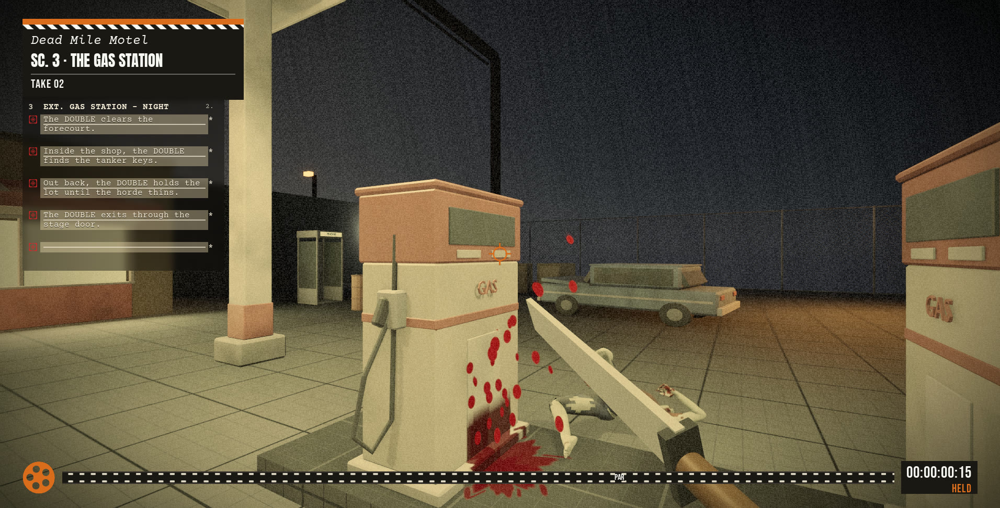

Lumen is out: finding seven milliseconds a frame
My playtest ran at about 20 fps. Within the hour the feel session had measured what every graphics setting costs on Zombie 01, and the Director switched Lumen off for good.
Day 2, Fri 13 NovHour 28

The last note from this morning's playtest was the bluntest:
"Performance, it's quite bad… I don't mind if we want to go for a non-Lumen approach but we need to be hitting at least 60 fps on this machine."
I'd played in the editor, at about 20 fps. The editor is slower than the game on its own, but as I told the Director, that "does seem low even for that". I can't judge how movement feels at that frame rate, so this came before any more polish.
Measure first
At 07:36 the Director asked the feel session for a table of what each level costs the graphics card, "within 60 min". It wrote a console command, rt.Perf.Sweep, that stands the camera at a level's opening view, switches one setting off, waits, averages three seconds, puts it back and moves to the next. The first table, for Zombie 01, was in at 08:15.
The frame took 18.7 ms on an RTX 2060. 60 fps needs 16.7. Lumen's lighting was 3.2 ms of that, and switching Lumen from hardware to software ray tracing made it worse, not better. With Lumen off, plain shadow maps and DLSS Quality together: 11.5 ms.
The decision
The Director took it the same minute:
- Lumen off in every preset, with screen-space reflections in its place
- virtual shadow maps off
- DLSS Quality by default on cards that have it
- volumetric fog off
- three or four shadow-casting lights per area, no more
- the film look stays. "Leave it, it's the look."
The World session relights the first three levels for it. I also asked for graphics presets on the main menu, Low, Medium and High, and never Unreal's lowest.

What the table got wrong
Two rows were the sweep's own fault, and the session said so in the table. "DLSS Performance" measured the same as Quality because the sweep's restore step blocked the game's own resolution setting. And every row after 08:09 is void: the frame time jumped to 98 ms the moment the sweep switched one light's shadow off at runtime, and never came back. That can't happen in play, so it isn't my 20 fps, but it's being chased.
The numbers are also from an 864-line window, not 1080p. The estimate for 1080p is 12 to 13 ms. The other levels are being measured now.